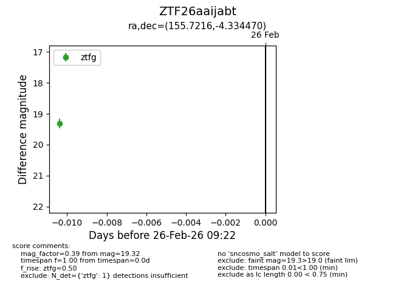
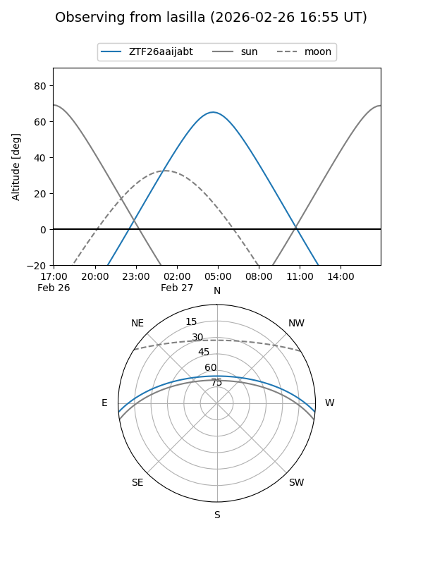
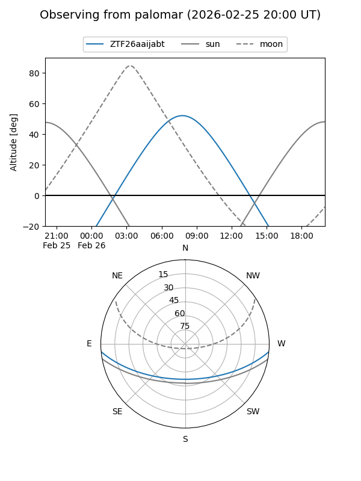

ZTF26aaijabt
Target ZTF26aaijabt at 2026-02-26 09:23
Aliases and brokers:
FINK: link
Lasair: link
ALeRCE: link
alt names
ZTF26aaijabt (ztf,fink_ztf)
Coordinates:
equatorial (ra, dec) = 155.7216,-4.33447
equatorial (HMS+DMS) = 10:22:53.19,-04:20:04.09
galactic (l, b) = (248.4521,+42.29852)
Flags:
Photometry:
last ztfg=19.32
1 ztfg detections
Lightcurve

Visibility


Additional plots